Total internal reflection
WE have seen that when light passes from air to glass there is always a reflected ray and a refracted ray. Now we shall find out what happens when light tries to pass from glass to air.
In fig. 1a a ray meets the surface at a small angle of incidence i and a weak internally reflected ray is produced as well as as the refracted ray. The angle of refraction r is greater than the angle of incidence i. It follows that if the angle of incidence is increased it will reach a critical value where the angle of refraction is just 90° and the refracted ray grazes along the surface of the glass, fig. 1b. This value of the angle of incidence is called the critical angle:
The critical angle between two media is the angle of incidence in the optically denser medium for which the angle of refraction is 90°.
If the angle of incidence i is further increased, becoming greater thanthe critical angle (i > c, fig. 1c), it is impossible for the angle of refraction to exceed 90°. Now no light emerges and all the light is totally internally reflected. The inside surface of the glass behaves like a perfect mirror.
Total internal reflection occurs when:
a ray of light is inside the optically denser of two media and;
the angle of incidence at the surface is greater than the critical angle for the pair of media.
Calculation of critical angle
For a ray of light going from glass to air, the angle of incidence i equals the critical angle c when the angle of refraction r is just 90°:
i = c when r = 90°
and the refractive index from glass to ait ng is given by
ng = sin i/sin r = sin c/sin 90° = sin c/1
sin c = ng
or
sin c = 1/ng
Thus if the refractive index of glass ng = 1.5, we have:
sin c = 1/1.5 = 0.67
therefore the critical angle c = 42°.
In general the critical angle c between a medium of (absolute) refractive index n and the air is given by
sin c = 1/1n